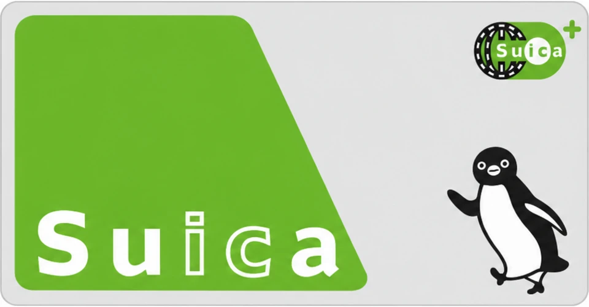
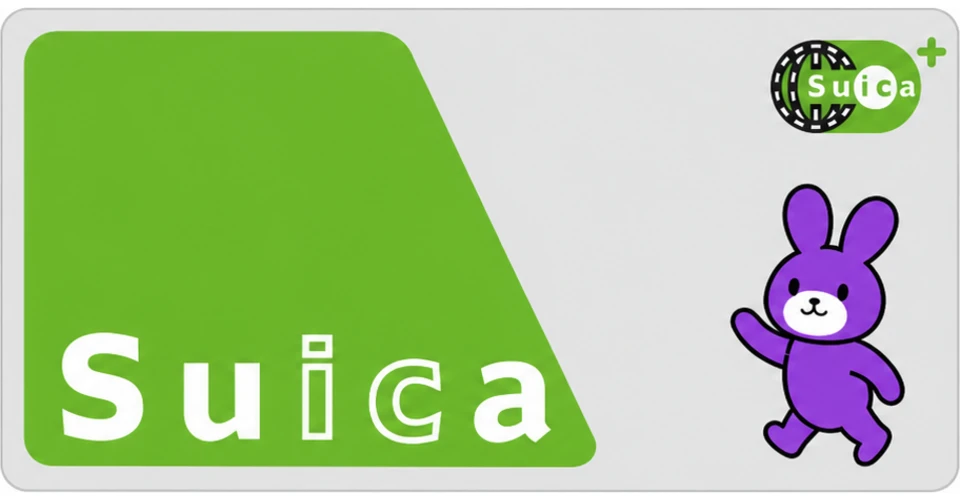
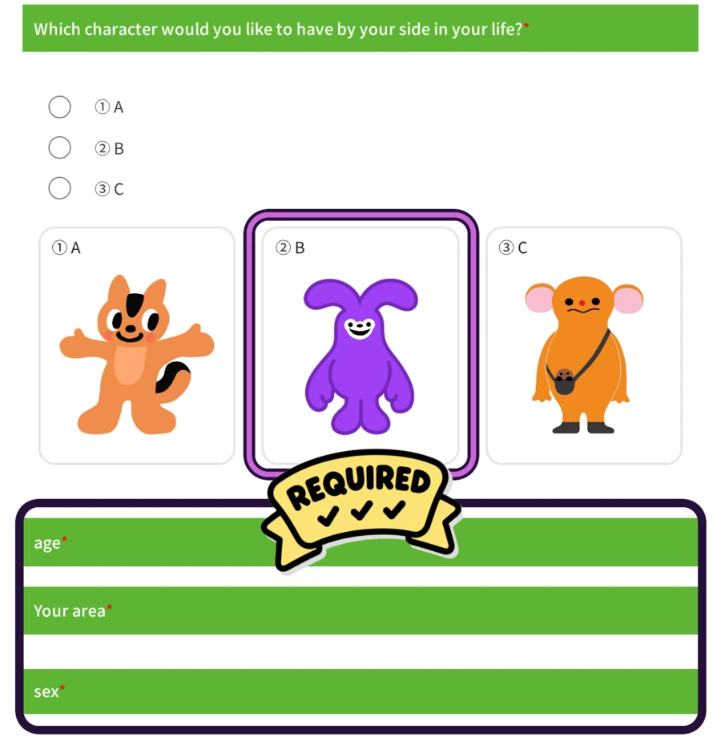
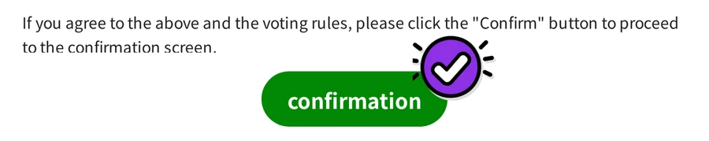

Old card out. New card in.
Suica Rabbit's been carrying the same worn-out card since day one. Old card, new card, one clean tap. Try it.


Same rabbit, new card. One clean tap and $うさぎ takes you the rest of the way.
Suica Rabbit's been carrying the same worn-out card since day one. Old card, new card, one clean tap. Try it.


JR East is running a real public poll for Suica's next mascot, and one of the three finalists is a purple rabbit. Here's exactly how to go cast your vote on their official form, step by step.
Open the official ballot ↗︎Tap the ballot link above. It opens JR East's real voting form in a new tab. Tap "English" in the top-right corner (built into their site) so it reads like the screenshots below. No account or app needed.

Pick ② B, the rabbit. Then fill in the three required fields underneath it: age, area, and sex.

Tap Confirm (確認). Review your answers on the next screen, then submit. That's it, you voted.
Voting is run entirely by JR East on their own official site. Suica Rabbit has no control over or affiliation with the poll, we just want to see the rabbit win.
Get $うさぎ on BNB Chain. One little swap, one very happy rabbit.
Use a wallet on BNB Smart Chain. Keep a little BNB for network fees.
The links below select the chain and fill in the token address for you.
Connect your wallet, choose an amount, and review the quote before confirming.
うさぎ (usagi) is Japanese for "rabbit." It's also the ticker for Suica Rabbit: $うさぎ.
Use the buy panel above to copy the contract address, or open PancakeSwap or Fomo (フォモ) with $うさぎ selected. Connect a wallet on BNB Smart Chain, choose an amount, then review and confirm your swap.
No. Suica Rabbit is an independent meme project, with no affiliation to JR East or Suica (公式ではありません).
The real Suica Penguin retires March 31, 2027, after almost 30 years on the card. JR East opened a public vote on September 8 to pick its successor, winner announced November 18 (Suica's anniversary). Suica Rabbit is our unofficial write-in candidate: same tap, new mascot, floppy ears instead of a bowtie (非公式です).